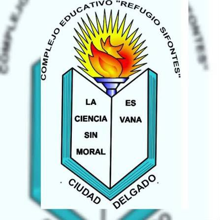
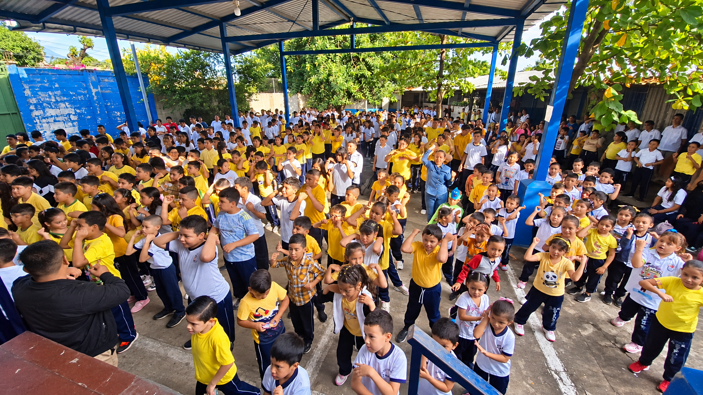
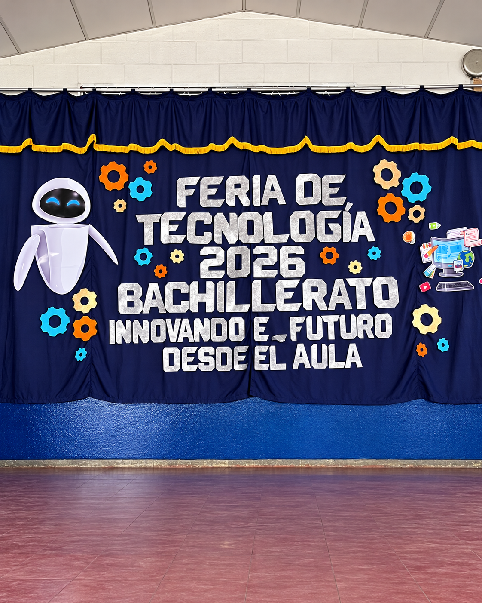

🎓
Educación
Promovemos el aprendizaje y el desarrollo de conocimientos y habilidades.

Refugio SifontesFormando estudiantes con conocimientos, valores y habilidades para enfrentar los desafíos del futuro.
El Complejo Educativo Refugio Sifontes es una institución ubicada en Ciudad Delgado, San Salvador, comprometida con la formación académica y tecnológica de sus estudiantes.
Promovemos el aprendizaje y el desarrollo de conocimientos y habilidades.
Impulsamos el interés por la informática, la innovación y las nuevas tecnologías.
Fomentamos el respeto, la responsabilidad, la convivencia y el trabajo en equipo.
Conoce las dos opciones de formación que presentamos en nuestro sitio web.
Formación académica orientada al desarrollo de conocimientos y capacidades para continuar estudios superiores.
2 añosBachillerato Técnico Vocacional orientado a las redes, mantenimiento de computadoras, programación y servicios informáticos.
3 años Conocer especialidad →El Bachillerato Técnico Vocacional en Infraestructura Tecnológica y Servicios Informáticos (ITSI) tiene una duración de tres años, durante los cuales los estudiantes desarrollan conocimientos y habilidades en distintas áreas de la tecnología.
Conoce a los profesionales que contribuyen a la formación de nuestros estudiantes.
Bachillerato General
Bachillerato General
Infraestructura Tecnológica
Servicios Informáticos
Espacios de participación, creatividad y aprendizaje para nuestros estudiantes.
Presentación de trabajos, conocimientos y proyectos estudiantiles.
Desarrollo de propuestas y soluciones relacionadas con tecnología.
Eventos que promueven la participación y la convivencia estudiantil.
Conoce algunos momentos especiales de nuestra comunidad educativa.


Estamos ubicados en Avenida Paleca N.º 52, Ciudad Delgado, San Salvador, El Salvador.
Avenida Paleca N.º 52, Ciudad Delgado, San Salvador, El Salvador.
📍 Cómo llegar con Google Maps